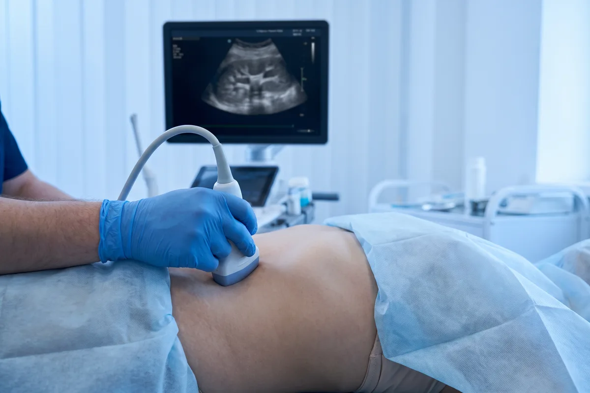

Dr. Marcelo Marquez Cruz · Mérida
Ultrasonido Renal y Vías Urinarias
Indicaciones para este estudio
¿Cuándo se solicita este estudio?
Ultrasonido de próstata: incluido en el estudio renal
Muchos pacientes buscan un ultrasonido de próstata en Mérida sin saber que está incluido dentro del estudio renal y de vías urinarias. El ultrasonido mide el volumen prostático con precisión (fórmula elipsoide: largo × ancho × alto × 0.523), lo que permite calcular el PSA density y orientar el diagnóstico de hiperplasia benigna de próstata (HBP). Además, mide el residuo postmiccional (cantidad de orina que queda en la vejiga tras orinar), un parámetro clave para evaluar la obstrucción del tracto urinario inferior.
Piedras en el riñón: detección y seguimiento
El ultrasonido detecta cálculos renales (piedras en el riñón) desde 3-4 mm, con alta sensibilidad para cálculos en el riñón y la vejiga. Permite evaluar la presencia de hidronefrosis (dilatación del sistema colector por obstrucción), que es la complicación más importante de la litiasis renal. También diferencia entre quistes renales simples (benignos, clasificación Bosniak I-II) y quistes complejos que requieren seguimiento o biopsia (Bosniak III-IV).
¿Qué evaluamos?
- Dolor lumbar o en el flanco (cólico renal)
- Sospecha de cálculos renales (piedras en el riñón)
- Infecciones urinarias recurrentes
- Sangre en la orina (hematuria)
- Elevación de creatinina o alteración de la función renal
- Seguimiento de quistes renales o masas renales conocidas
- Dificultad para orinar, chorro débil o urgencia miccional
- Evaluación de la próstata (volumen, hiperplasia benigna)
- Medición del residuo postmiccional (orina que queda en la vejiga)
- Control en pacientes con hipertensión arterial de causa renal
Preparación: Vejiga llena: tomar aproximadamente 1 litro de agua 1 hora antes y no orinar hasta terminar el estudio (adultos). En menores de 8 años: ~250 ml. Ver guía completa.
El ultrasonido renal y de vías urinarias evalúa los riñones, uréteres, vejiga y próstata. Es el estudio de primera elección para el cólico renal, ya que detecta cálculos renales y la dilatación del sistema colector (hidronefrosis) causada por la obstrucción. La preparación con vejiga llena es fundamental: permite evaluar la vejiga, medir su volumen y detectar alteraciones de la pared vesical, y también mejora la visualización de los riñones en pacientes delgados.
El ultrasonido detecta y caracteriza los quistes renales según la clasificación de Bosniak (simples, complicados o con características malignas), orientando la necesidad de seguimiento o biopsia. Las masas renales sólidas requieren estudio complementario con tomografía o resonancia magnética. En la infección urinaria, el ultrasonido descarta complicaciones como pionefrosis (riñón infectado y obstruido) o absceso perirrenal.
Para la próstata, el ultrasonido mide el volumen glandular, evalúa la hiperplasia benigna prostática (HBP) y mide el residuo postmiccional (cantidad de orina que queda en la vejiga después de orinar), que es un indicador clave de la obstrucción al flujo urinario. El estudio es complementario al PSA en el seguimiento urológico.
- Cálculos renales e hidronefrosis
- Quistes renales — clasificación de Bosniak
- Masas renales sólidas
- Infecciones urinarias complicadas (pionefrosis, absceso)
- Evaluación de vejiga y pared vesical
- Volumen prostático y residuo postmiccional
- Riñón poliquístico
- Anomalías congénitas (riñón en herradura, duplicidad)

Preguntas frecuentes
¿Cómo debo prepararme para el ultrasonido renal?
¿Detecta piedras en el riñón?
¿Evalúa la próstata?
¿Listo para tu estudio?
Agenda en Ultrasonido Biogamma, Mérida, Yucatán. Diagnóstico preciso.